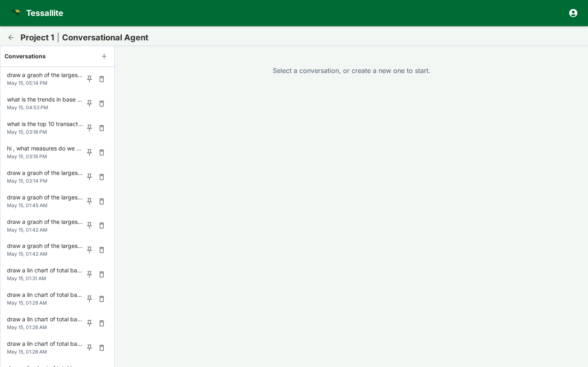

Agent Chat

What this covers
Agent Chat lets a user ask questions about project data in natural language. It uses the project agent configuration, the approved model context, glossary terms, optional project-level personas, and judge rubrics to plan queries and explain results.
How scope is chosen
The agent works at project level. A project can contain multiple models, but only models enabled for the agent are included in context. If a project-level persona is selected, the agent sees only the models, measures, and dimensions allowed by that persona. Model-level row security and persona rules still apply when a query is executed.
Conversation controls
- New conversation starts a fresh thread with its own memory window.
- Conversation list lets users return to previous work.
- Persona or model controls narrow the semantic context when configured.
- Trace and citations show which model objects, glossary terms, and query steps influenced the answer.
- Judge verdicts flag whether the answer passed the configured quality rubric.
- Visuals and data show polished Tessallite-themed ECharts by default, with the data table kept in its own expandable section. Diagnostics such as thought summary and generated queries stay collapsed until opened.
Writing effective questions
Ask in business terms first: "What changed in April margin for EMEA?" is better than starting with table names. If the answer is ambiguous, add grain and filters: region, date range, merchant category, fiscal period, or persona. The agent can plan multi-step answers, but it is still governed by the semantic model; undefined measures need to be created in Model Builder first.
When to switch to Model Builder
Use Agent Chat for exploration and explanation. Switch to Model Builder when the answer reveals missing semantics: a measure needs a clearer definition, a dimension alias is confusing, a glossary term is missing, an aggregate is needed, or a row-security/persona rule blocks the intended audience.